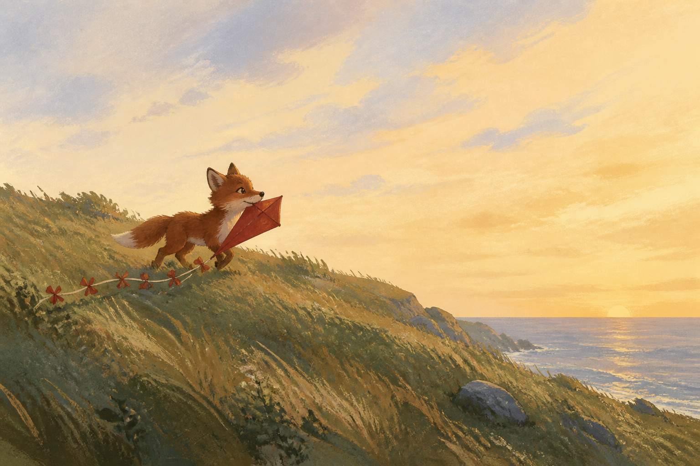
1. First memory the bond
I woke in Milo’s teeth.
That is my first memory: damp, the smell of grass, his breath huffing through his nose because he would not open his mouth and drop me. He carried me up the hill to the sea wind the way a cub carries something he is proud of and afraid to lose at the same time.
- Holds
- Wide dawn hill → slow push toward cub → hold on kite in teeth.
- Sound
- Wind, grass, soft morning. Narrator intimate, close-mic.
- Ends on
- The folded red kite, ribbon trailing, safe in his teeth.
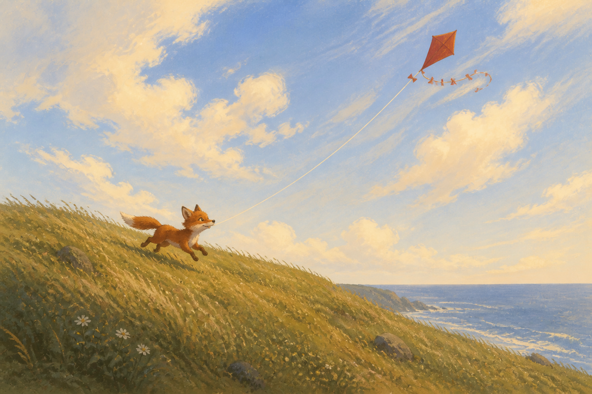
2. He ran, I caught the bond
He ran. I caught. That is how it works.
The wind got under me and I jumped, and the string sang. Up through my spine I felt every step he took — his paws drumming, his stop, his laugh like a bark. His tail went straight up, all rust and cream tip, forty percent of him and all of his mood. When I rose, his tail rose. We were one line: cub, string, me.
For a while that was enough.
- Holds
- Follow the string cub→kite → kite soaring → wide one-line shot.
- Sound
- The Tug motif whole: low + high together. Joyful.
- Ends on
- One unbroken line: cub, string, kite.
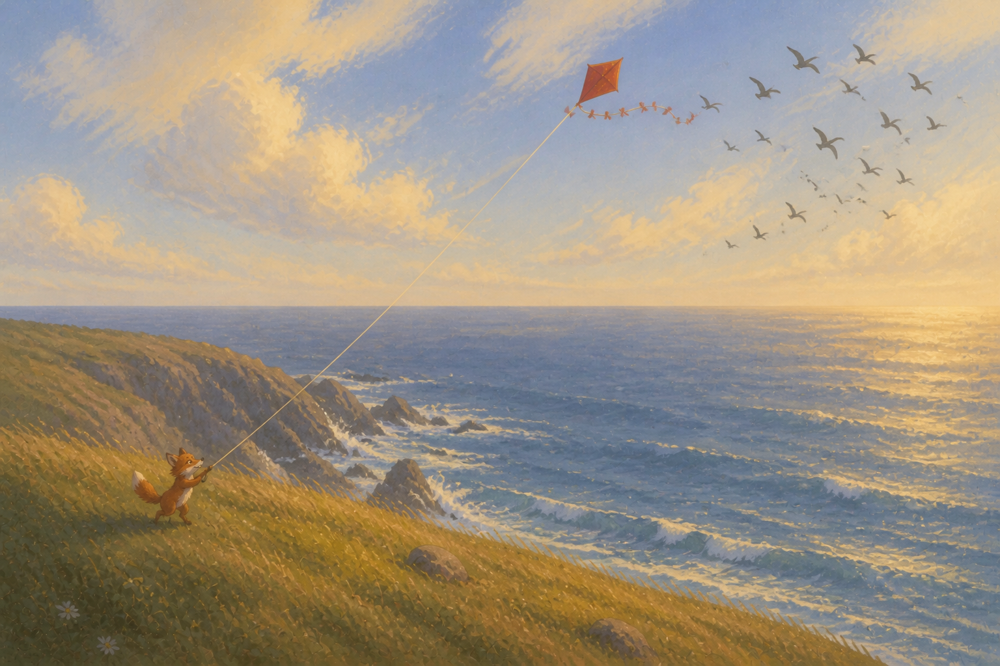
3. The end of the string the want
Then I hit the end of the string.
It stopped me with a jerk that went through my sticks. And just past me, where I could not go, the swifts came pouring over the cliff.
They did not flap the way gulls flap. They cut. They poured and swirled and dove out over the open sea, screaming thin screams, and never once looked down at a string. My tail curled out toward them before I told it to. It wanted to follow.
I leaned. The string said no.
- Holds
- Kite POV as swifts sweep past → tail curling → tiny fox below.
- Sound
- Swift-screams, woodwind swirl; motif cut off by the string going taut.
- Ends on
- Tail ribbon curled toward the horizon.
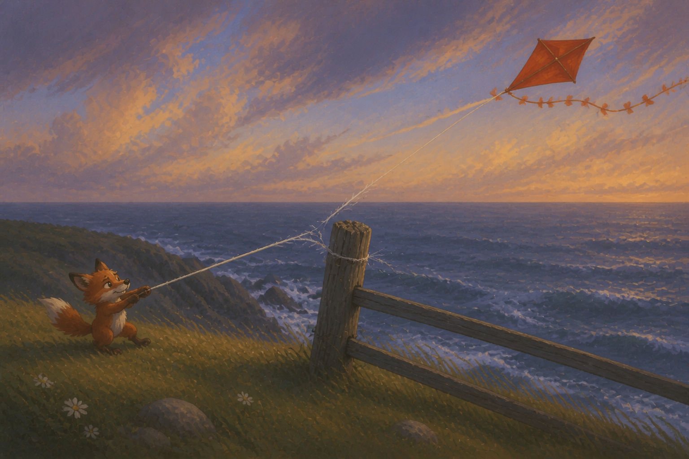
4. Fighting the string rising tension
Anyone who has never been tied will tell you the tie is simple. It is not. It hums. It pulls at the center of you and will not let you forget it, even when the wind is good.
So I fought it.
I dove left. I swung right. I yanked. Below me Milo thought it was a game. He laughed and dug his paws in, skidding a little in the grass, delighted. That made me yank harder. I hated him a little then, for laughing.
The string sawed back and forth over the old fence post on the cliff. I felt each pass as a shiver. I did not know — I know now — that with every pass one more fiber let go. Milo did not see it either. He was watching me, not the post.
- Holds
- Kite thrashing wide → post extreme close-up, fraying → faster cutting.
- Sound
- Motif faster, off-balance; each scrape a rasp.
- Ends on
- One last strand, still taut.
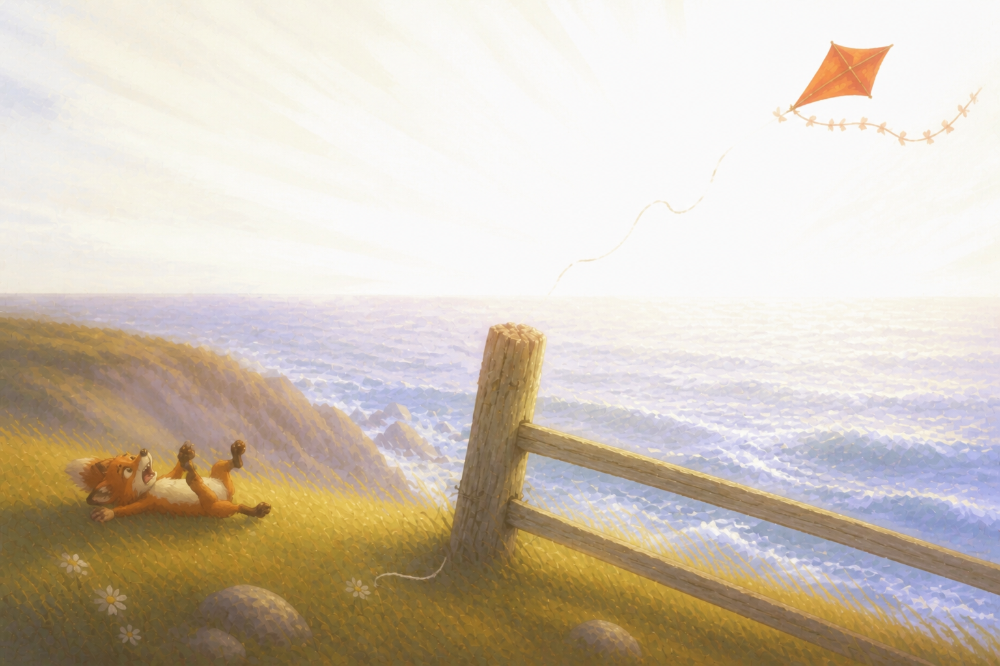
5. Snap turning point
A big gust came off the sea.
Ping.
The pull vanished. I shot up like a cork out of water. For one second I saw him flat on his back in the grass, paws empty, mouth open, the limp end of the string falling beside him. He pushed up on one foreleg and reached after me.
I did not stay to watch. I was free.
- Holds
- White flash frame → kite flung up → Milo reaching (hold his face).
- Sound
- Ping, two beats of silence, then a huge upbeat swell.
- Ends on
- Empty paws reaching after the kite.
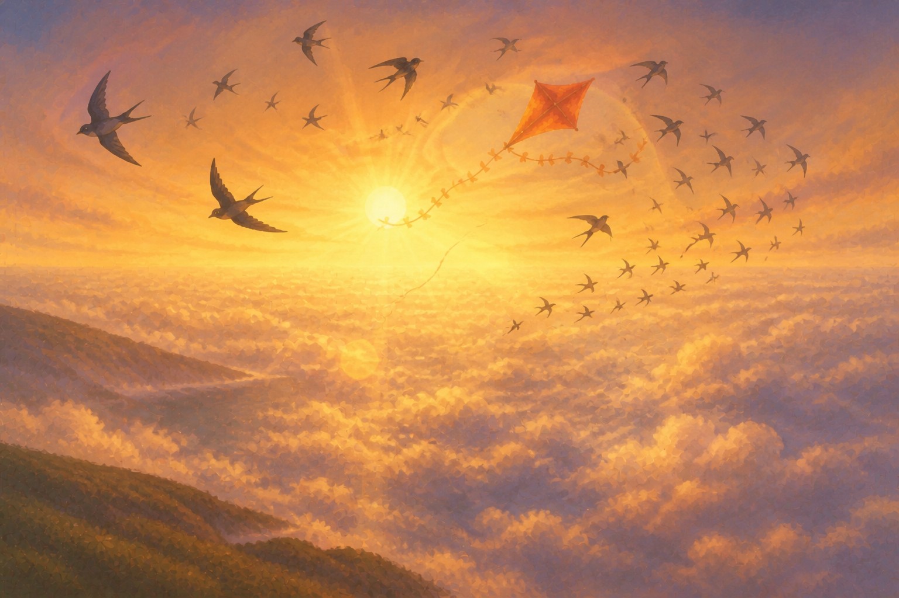
6. Free false victory
Oh, the climb. I broke through the cloud into gold. The sea below went copper. The air was smooth and huge and mine. The swifts took me in. They ringed me and screamed and I looped with them, rolled with them, dove with them. My broken end trailed under me, swaying, useless and light. I thought: this is what I am. Not a pet. This.
- Holds
- Sweeping crane with the flock → loops → swifts peeling away.
- Sound
- High note alone on flute, soaring, never answered. Thrilling, then hollow.
- Ends on
- Alone above the clouds, broken end swaying.
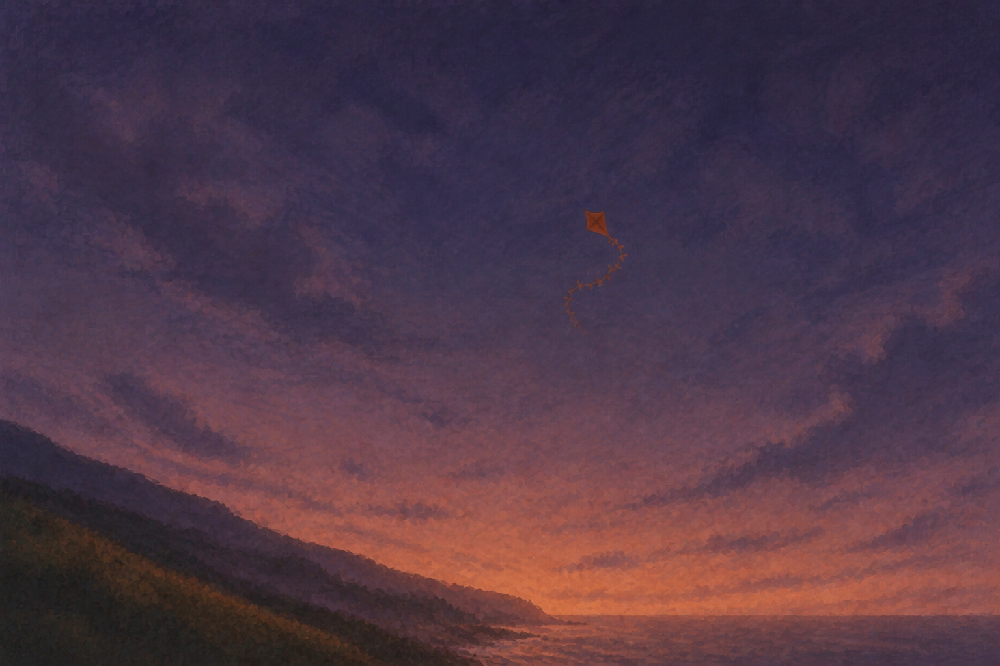
7. Nothing to push against the fall
Then they peeled away toward the horizon.
They went faster than I can go. I tried to follow and the wind shifted, just a small shift, the kind Milo’s hands used to answer without thinking.
A tethered kite leans against its string and climbs. I had nothing to lean against.
I flipped over.
I righted myself. I flipped again. I spun down through the cloud into purple and then into dark, spinning faster, the air slapping me first on one face then the other. There was no one holding the other end of me. I understood, falling, that the string had never been a leash. It had been the other half of my shape.
The thorn tree caught me.
- Holds
- Stall and wobble → locked-off wide fall → shrinking into dark.
- Sound
- Flute tries its high note, keeps getting cut off; wind louder.
- Ends on
- A rough crunch in branches.
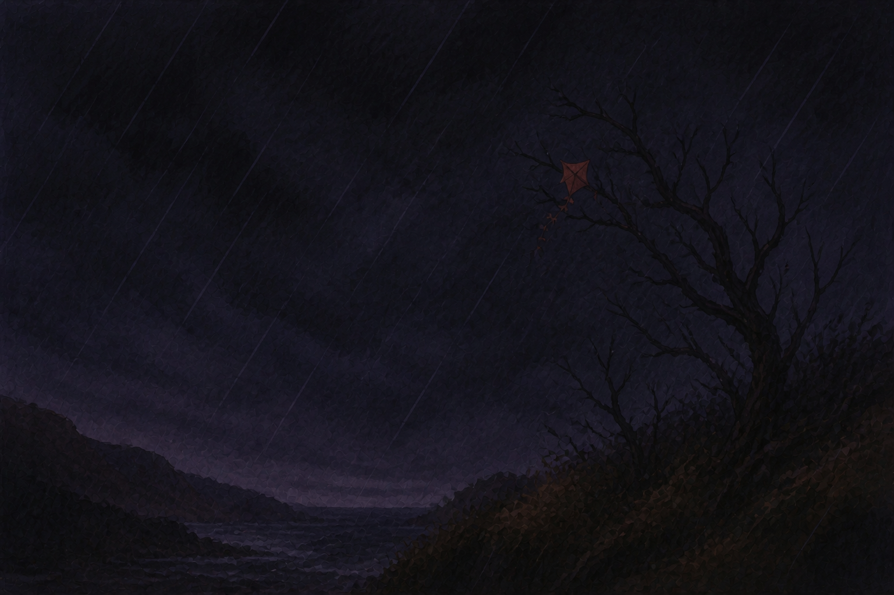
8. The thorn tree all is lost
Rain came in the night. It was the only thing that moved. I hung torn, my tail knotted in the branches, my red face dark with wet. The sky was empty. The swifts were gone. Milo was gone. For the first time I felt how small I was — a wet rag on thorns, nothing to push against, nothing to pull.
Then, on the hill below, a warm dot of light.
- Holds
- One long still shot; rain the only motion → lantern dot fades in.
- Sound
- The film’s one true silence (just rain), then a single low cello note.
- Ends on
- Warm light on the hill below.
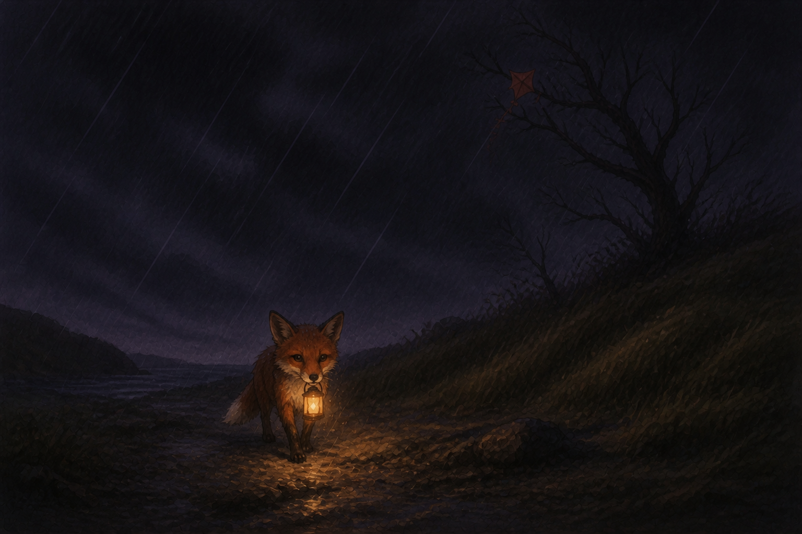
9. The search reconnection
He came slowly. Even from far off I knew his walk — quick, stopping, ears up, tail low and wet. He carried a lantern in a way that must have hurt his teeth, and the light swung with each step. It took him a long time. He did not run. When he reached the tree he stood right under me, big-eyed in the lantern glow, and reached up on his hind legs.
He missed. He tried again. A thorn scratched his foreleg and he whimpered through the lantern handle and kept reaching.
- Holds
- Lantern grows on the hill → under the tree → reaching paws.
- Sound
- Solo piano picks up the low note, quietly, waiting.
- Ends on
- Paws reaching up into branches.
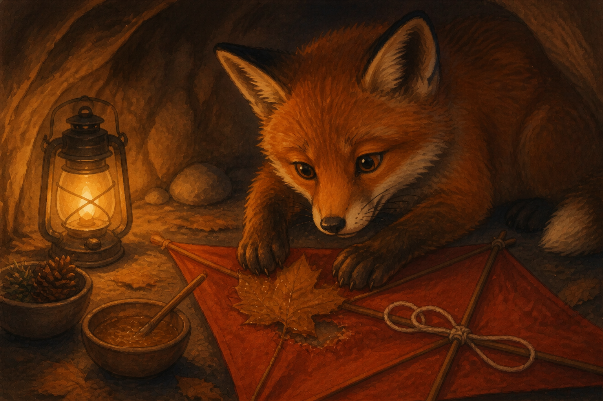
10. The mend reconnection
I dropped into his paw.
He carried me home under his chin to keep me dry. In the burrow, in lamplight, he worked. He cleaned the tear. He pressed a dry sycamore leaf over it and stuck it with pine sap, and he tied my broken string back together with his teeth and paws. The knot is lumpy and obvious. He did not hide it. He nosed it once to test it, and it held.
- Holds
- Close-ups of paws: leaf, sap, knot pulled tight → knot in close-up.
- Sound
- Piano low note holds; the high note still waited for.
- Ends on
- The lumpy knot, glinting.
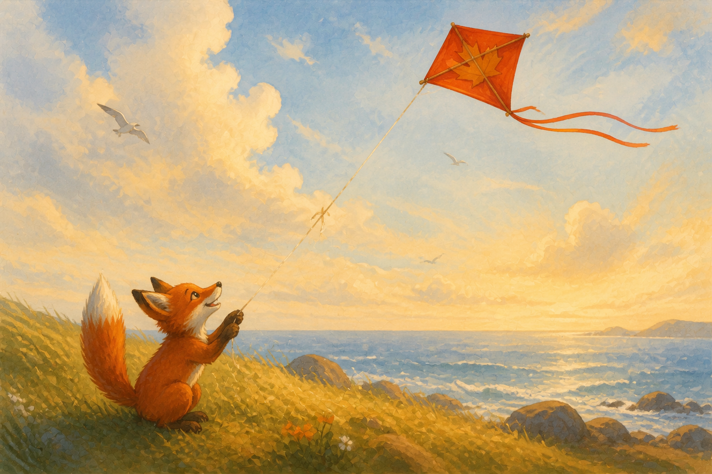
11. Leaning in climax
Morning on the hill. The same wind.
He ran. I caught. The wind hit me and the old anger rose up — pull, fight, prove — and then I felt the string go taut, felt his weight at the end of it through the knot, steady, waiting, never having let go first.
So I leaned into it instead of fighting it.
The pull sent me up. Higher than the fence post. Higher than the cloud gold. The swifts came back and circled me, screaming, and left again for the open sea. I watched them go. My tail streamed straight and steady behind me.
- Holds
- Track along the taut string past the glinting knot → kite climbing past old heights.
- Sound
- The Tug complete at last: low + high together, full strings.
- Ends on
- Tail streaming straight and steady.
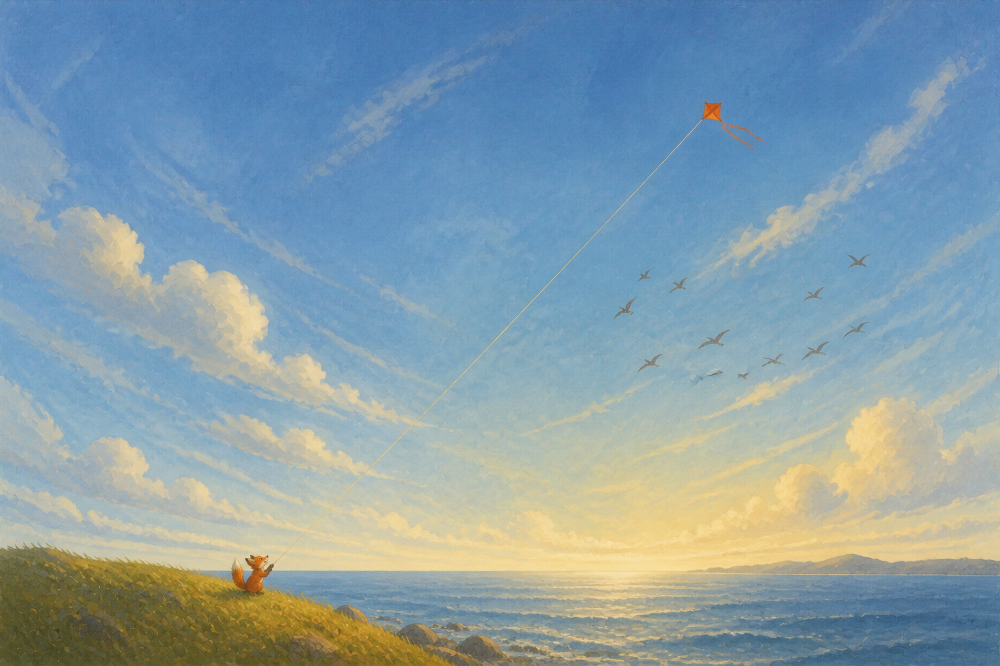
12. Held resolution
Below, one small fox sat with the string in his teeth, tail straight up, holding.
The string isn’t what holds me down. It’s what holds me up.
- Holds
- Very wide: one bright line, fox to kite → cut to black. Title: TETHERED.
- Sound
- Strings resolve; swift woodwinds weave once around the motif, then silence.
- Final shot
- One bright line with a red speck at the top.